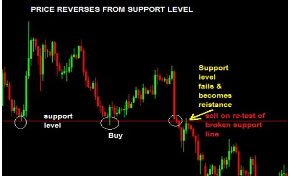
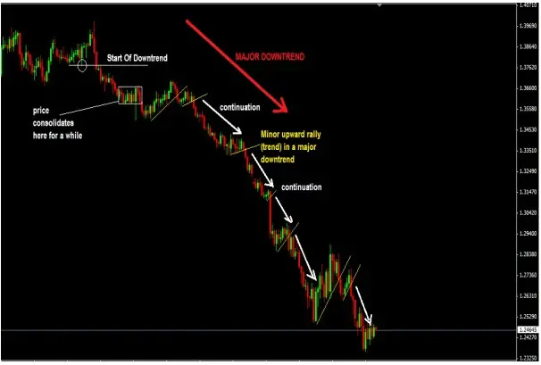

REVERSALS & CONTINUATION
A trend changing its direction is referred to as a reversal. For instance, the market was uptrending until price hit a
significant resistance level, then it reversed and became downtrending. Reversal refers to that.
Where can reversals occur? The main regions where price reversals do occur are as follows:
➢ Fibonacci levels,
➢ Support levels,
➢ Resistance levels
Here is an illustration of a price that reversed from a support level and rose before subsequently breaking it and falling. After the price tested the level again and the price fell, the broken support level is now acting as resistance.

What then, about continuation? Well, to put it simply, continuation denotes that a major trend, such an uptrend, is still in effect. and you'll see that the price slows down, possibly consolidates for a little while, and possibly drops back down a bit. It is comparable to a downswing, which is a tiny downturn in a major uptrend.

Therefore, it is referred to as a continuation when that occurs and price resumes moving in the initial upward direction. This idea is illustrated in the chart below.
Therefore, the key concern is how to identify trend continuity and place trades at the appropriate time.
You will learn more about chart patterns and candlestick patterns in this books section on how to identify precise chart patterns and very specific candlestick patterns.
3 reasons why understanding reversal points/levels as well as trend continuity patterns and signals is crucial for you:
1. Avoid buying at or close to a resistance level.
2. You shouldn't sell close or at a support level.
3. You need to understand continuation charts and candlestick patterns so that you can trade with the trend. You don't want to purchase when the trend
is down and you don't want to sell when the trend is up. (There are instances though, such in trading channels, which would be covered in chapter nine).